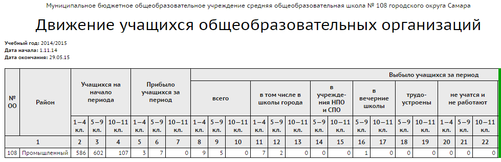
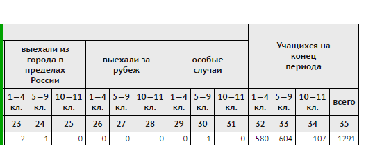

Отчёт "Движение учащихся общеобразовательных организаций", а также приложения к нему, можно получить за любой период времени, связанный с текущим учебным годом:
Дата начала может быть задана начиная с 1 апреля,
Дата окончания ограничена концом учебного года (как правило, 31 августа).
Например, если текущий учебный год - 2014/2015, то отчёт может быть получен за любой период времени между 1.04.2014 и 31.08.2015.

 |
Приложение 1 - Отчёт "Информация об учащихся, выбывших в дневные общеобразовательные организации"
Приложение 2 - Отчёт "Информация об учащихся, выбывших в вечерние школы, учреждения НПО и СПО, трудоустроенных, не работающих и не обучающихся"
Приложение 3 - Отчёт "Информация об учащихся, выбывших за пределы территориального образования"
Приложение 4 - Отчёт "Информация об учащихся, выбывших по особым случаям"
Эти отчёты позволяют детализировать списки выбывших учащихся в соответствии с причиной выбытия из образовательной организации.
Каждый отчет содержит личные данные выбывших (Ф.И.О., дату рождения, место жительства), характеристики выбытия, подтверждение наличия документов, фиксирующих факт выбытия.
Информация в отчёте будет корректна, если выбытие учащихся оформлено в книге движения надлежащим образом.
Особенности расчёта столбцов данного отчёта
Столбцы:
| · | в школы города
|
| · | в учреждения НПО и СПО
|
| · | в вечерние школы
|
Столбцы:
| · | выехали из города в пределах России
|
| · | выехали за рубеж
|
Столбцы:
| · | трудоустроены
|
| · | не учатся и не работают
|
| · | особые случаи (другие причины)
|
Таким образом, согласно алгоритму отчёта, каждый ученик учитывается только в одном столбце, и значение "выбыло всего" является суммой других столбцов по выбытию.